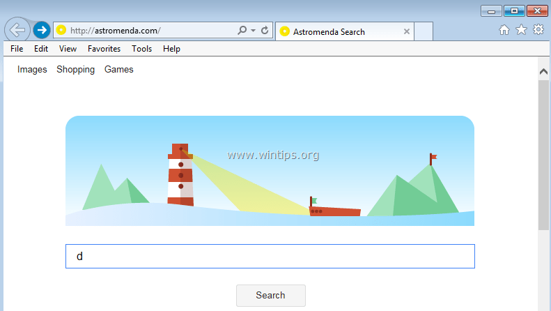

The benefits of using our search engine
The astromenda search engine will improve your life in the following ways:
- It will steal your private information and sell it to third-world countries.
- It will suggest websites that you would never visit and prohibit visiting those that are actually useful.
- It will show you adds wherever it can and whenever it can. Be ready to see one in your sleep.
- It will slowly spread viruses across your PC until it slowly halts and stops working completely.
- It will steal your credit card information. Less money, less problems.
Wait a minute! These all are cons. What am I doing here? Am I a con?